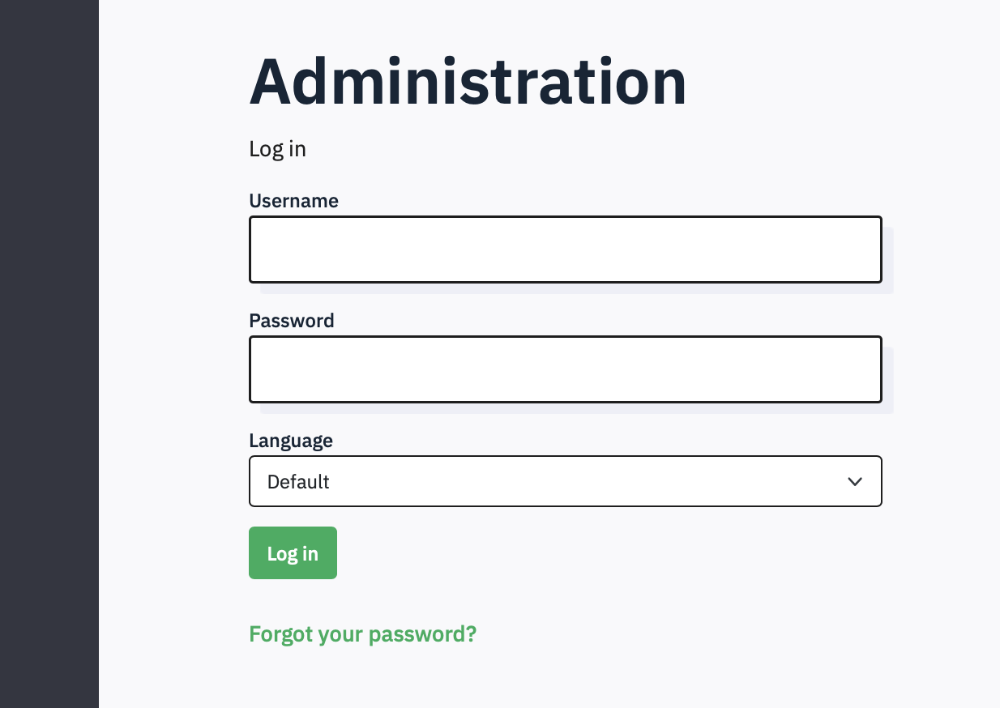
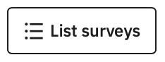
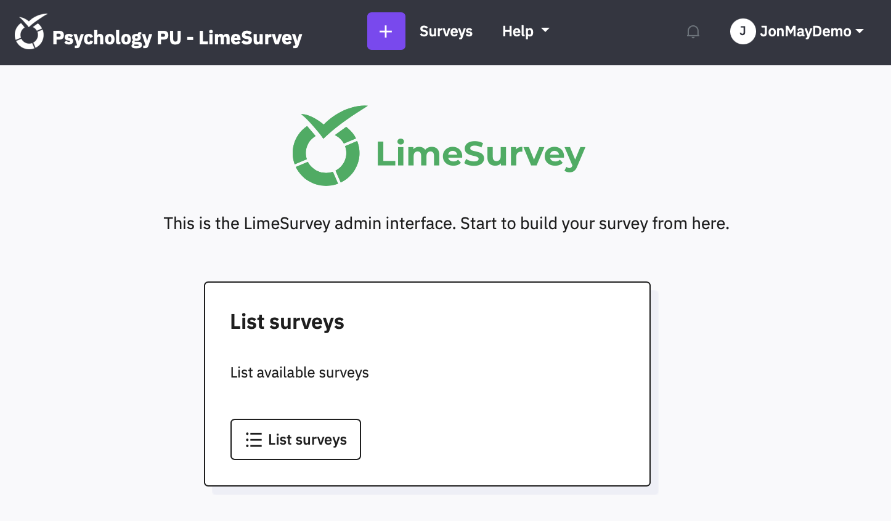
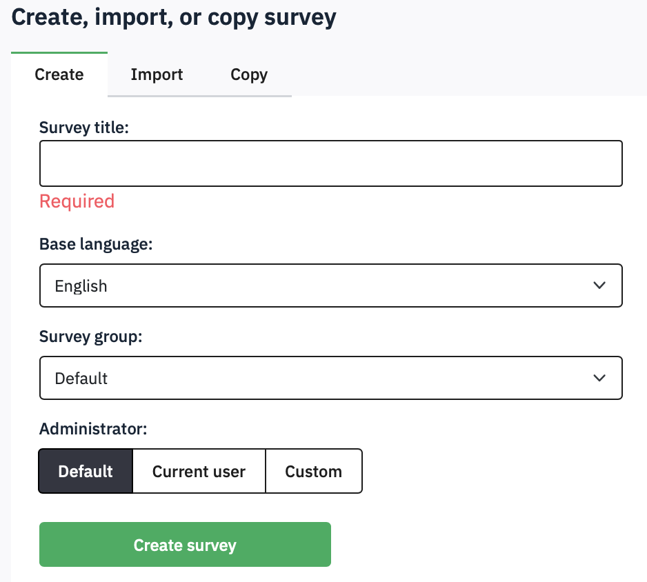
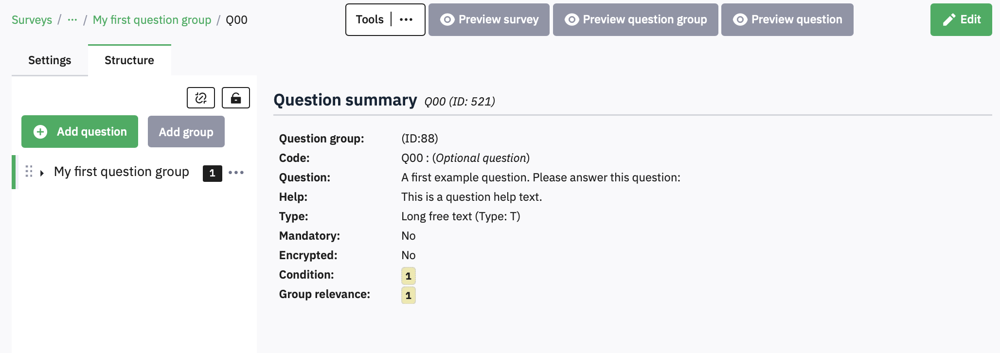
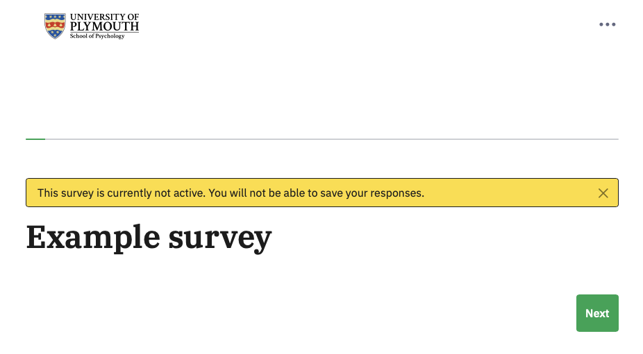
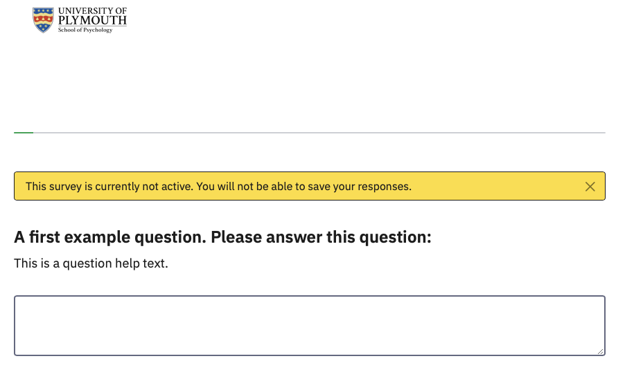
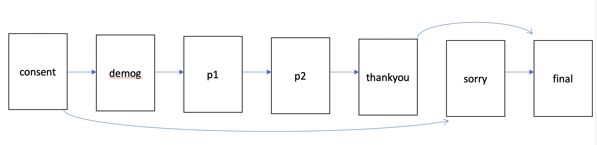

1 First steps
1.1 Getting an account and logging in
Whenever you are collecting data online, you need to make sure that the system you use is GDPR compliant. All survey respondents should be sure that their responses are anonymous and confidential, while allowing for sharing of non-identifying data to comply with open science practices.
JISC OS is a low-cost basic system used widely by UK higher education institutions, and is subscribed to by the University. You can obtain an account from TIS. It is suitable for simple straight-through surveys of undergraduates, with no need for randomisation or pretty layouts. If you want speed and simplicity, use JISC OS.
Limesurvey is an open source platform, and offers more professional looking surveys, with greater functionality, but it is correspondingly complicated to use. The school has its own implementation, running on our own servers, administered by the Technical Office. If you need anything more than a simple fixed set of questions, use Limesurvey.
1.1.1 How to get an Account and Login
Academic staff will have accounts created for them, but students can create their own.
To create your account, click the ‘Forgot your password?’ link and use your UoP email address and password.If asked for your username, use your email address.

When you first log in, you will see this screen, allowing you to List the surveys you have created. If you click the button  you will (of course) see no surveys yet. You can access this list at any time by clicking Surveys in the top menu bar. 
NB: If you are a member of academic staff you will be able to see all existing surveys.
1.2 Create a new survey
Create a new survey using the purple Create new survey button at the top of the window
Give your survey a title (you can edit this later) and then click Create survey

Your survey will look like this – Limesurvey automatically creates a Question for you (called ‘Q00’) and puts it into a Question Group called ‘My first question group’. Putting questions in groups lets you organise your survey, and is an essential part of randomisation or presenting questions in a set order. Before editing this question, notice the details on this screen:

At the top left is the name of your survey, as a link of ‘breadcrumbs’ which you can use to navigate back up to the list of all your surveys, or to other surveys.
Below that are two tabs – the overall Settings for your survey and the Structure which lists the actual questions. At the moment, you cannot see your Q00 in this list, but if you click the little triangle in the group name, it will be shown. Hiding questions until you need to see them helps keep the view manageable.
The Question Summary gives an overview of the Question text and some settings which we will come onto later. At the top are some buttons that let you preview how the question or group of questions or the whole survey will appear on screen. If you click Preview Survey, you should see this welcome screen, and then when you click Next, the question:

CLicking the green Next button takes you to the first question:

By default all surveys on psysurvey include the school logo, as required by the Ethical Committee.
Under that is a progress bar, which again is on by default but which can be turned off. The yellow box appears to let you know that this is a preview and your entry will not be saved anywhere.
Below that is your question. You can also turn off the welcome screen – everything in Limesurvey can be controlled.
1.3 Structuring your questionnaire
Before you plough into creating questions, think about the basic sections that every survey will need. Don’t build your survey as one huge long screen full of questions. Use separate screens with a few related questions on each one.

The horizontal arrows in this figure show how the survey continues when the participant clicks ‘Next’ on each page. The arcs show how the survey can skip pages using branching. You can also use branching to present some sections depending upon answers given earlier. You can also include answers given in one question in subsequent questions using ‘piping’. Branching and Piping are described in later sections.
The first page of any survey must be an information page that explains what the survey is about, why you are asking people to complete it, how long it will take, and what it involves. You will have to provide all of this information to get ethical approval. This information allows people to give informed consent.
If people give consent, then the next page will probably need to collect demographic information: you should only collect information that you will need to report, and which is relevant to your survey. Conventionally, sex and age are always reported, but if your survey is on a particular topic you may need other personal information, such as sexual orientation or height and weight. At the end of the survey, there should be a page that thanks them and gives debriefing information, as appropriate, perhaps explaining any hypotheses that you are testing and other information that could not be provided in the consenting page at the start.
If the respondent does not give consent, then they should be thanked politely, but they should not receive the same debrief. In Limesurvey, you can make questions only appear if an early question has been answered in a certain way – so only if they have given consent, for example. Rather than jumping over questions, they are just not shown.
At the end of a survey, you can redirect the participant to another website (e.g., to another survey, a website or online experiment, or back to SONA to credit their account with a participation point).
For example, you can recruit participants for an online experiment on SONA, and send them to Limesurvey for the consent form and to collect demographic data, before redirecting them to your OpenSesame experiment on JATOS. At the end the experiment can send them to a second Limesurvey survey for the debrief, and perhaps some more scales, and a redirect to SONA to award their point. Each time the participant goes to a new website, their participant number is passed along and recorded in the data for each site. This is described in the final section of this guide.